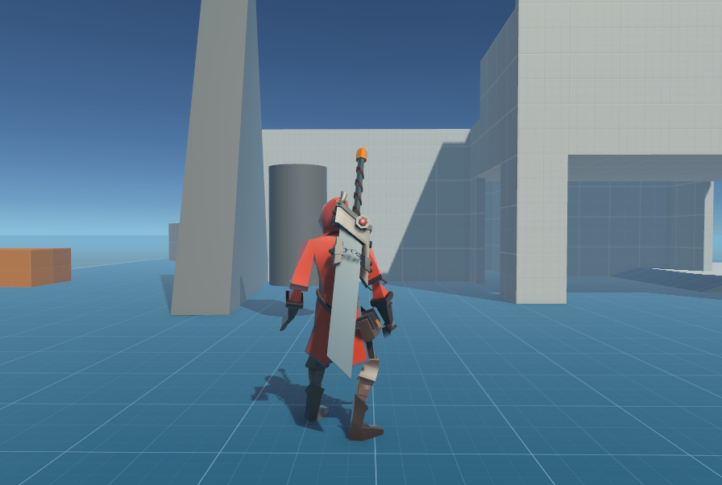
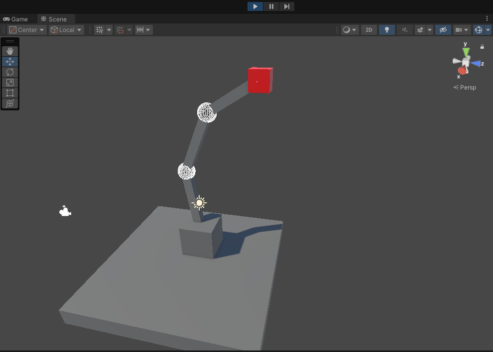
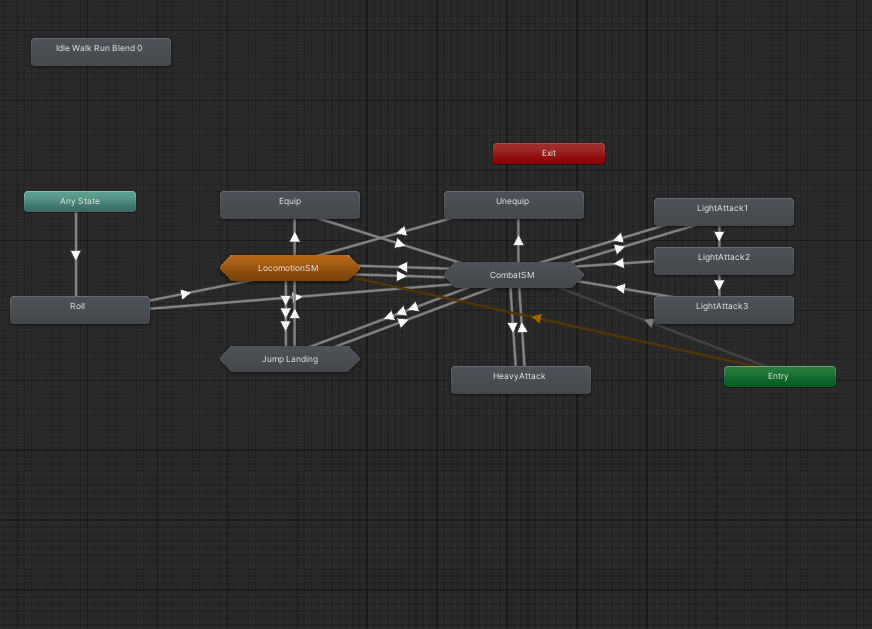

In Progress
Mini Wind Energy Harvester
Building a fan-driven wind energy test setup using magnets and coils to generate AC electrical output and implementing rectification to obtain usable DC power.
Power/Energy Systems · Automation · Software Tools
First-year Electrical Engineering Co-op student with a Computer Science DEC, interested in power and energy systems, embedded electronics, automation, and hardware-software integration. My work spans Arduino data acquisition, Python automation, circuit simulation, and Unity/C# real-time systems.
Featured Work
Measured builds, practical implementation, and documentation that supports the work.
Building a fan-driven wind energy test setup using magnets and coils to generate AC electrical output and implementing rectification to obtain usable DC power.
Collaborated on a Unity game prototype, contributing gameplay systems, procedural movement logic, and real-time combat behavior.
Building a personalized news intelligence platform that ingests articles, filters higher-signal information, and automates delivery.
Simulated and analyzed circuits involving resistors, capacitors, inductors, op-amps, AC sources, and transient behavior using LTspice and core circuit analysis methods.
Project Details
Click a featured project above to open its matching detail card here.
In Progress
A prototype energy-harvesting setup studying AC generation, rectification, and how airflow and load conditions affect usable electrical output.
Completed
A Unity prototype bringing together gameplay systems, procedural arm movement, and combat behavior in a team-built project.



In Progress
A personalized news intelligence platform prototype using Python, APIs, scraping, and AI-assisted filtering to surface higher-signal information.
Simulation
A compact archive for circuit analysis, LTspice studies, measurement notes, and smaller technical work supporting your engineering foundation.
Technical Skills
Software, simulation, automation, and electrical fundamentals used across my projects.
Programming
Comfortable moving between scripting, source control, web development, and real-time logic depending on the project.
Frameworks and Tools
Experience with API integration, web scraping, breadboarding, engineering calculations, and combining software tools with hardware workflows.
Electrical
Applied KCL and KVL, Thevenin and Norton equivalents, phasors, op-amp behavior, and logic gates using ICs across labs and simulations.
Data and Automation
I use lightweight automation and structured analysis to make experiments easier to repeat, compare, and explain.
Experience
Hands-on project work with strong communication and customer-facing experience.
Work Experience
Rosemere, QC · 2022-2023
Engineering Strengths
Portfolio Direction
This site is designed to highlight the combination of engineering fundamentals, software tools, and project documentation I want to keep developing through co-op and personal work.
Next Connection
Montreal, QC · 514-926-3789 · chhunsmanith@gmail.com